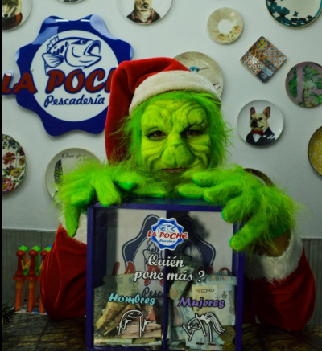
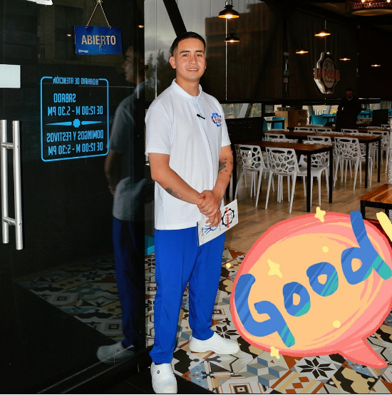
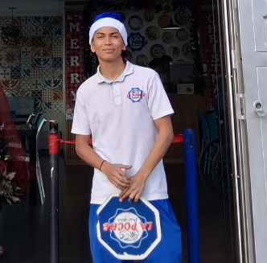

Nuestro Personal
Nuestro Personal

Coordinador
El Grinch
El grinch es el coordinador que aparece solo cada diciembre para causar caos y alegrias.

Mesero
Brayan
Mesero dedicado dispuesto ayudar y servir a los clientes con excelencia.
Nuestro Personal

Ayudante
Miguel Cantor
Ayuda en varias tareas del restaurante para tener una mejor operación y entregar un excelente servicio
Ayudante
Samuel Buitrago
Ayuda en varias tareas del restaurante para tener una mejor operación y entregar un excelente servicio